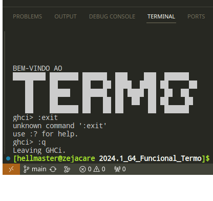

Termo
Disciplina: FGA0210 - PARADIGMAS DE PROGRAMAÇÃO - T01
Nro do Grupo (de acordo com a Planilha de Divisão dos Grupos): 04
Paradigma: Funcional

Alunos
| Matrícula | Aluno |
|---|---|
| 20/0060783 | Ana Beatriz Wanderley Massuh |
| 19/0026588 | Davi Lima silva |
| 20/0057421 | Delziron Braz de Lima |
| 20/0018060 | Gabriel Ferreira da Silva |
| 20/0030264 | Guilherme Nishimura da Silva |
| 18/0121847 | Helder Lourenço de Abreu Marques |
| 18/0136925 | Hugo Rocha de Moura |
| 19/0142260 | Mateus de Almeida Dias |
| 20/0025791 | Pablo Guilherme de Jesus Batista Silva |
Sobre
Termo é uma aplicação no estilo jogo que pretende simular um jogo de advinhação que baseado em um tamanho de palavras o objetivo do "player" é tentar advinhar qual palavra é com um numero X de tentativas as quais indicam em caso de acerto (em verde) de letra ou de erro(marrom).
Screenshots
Adicione 2 ou mais screenshots do projeto em termos de interface e/ou funcionamento.
Instalação
Linguagens: Haskell
Tecnologias: xxxxxx
Descreva os pré-requisitos para rodar o seu projeto e os comandos necessários.
Insira um manual ou um script para auxiliar ainda mais.
Gifs animados e outras ilustrações são bem-vindos!
Uso
Explique como usar seu projeto. Procure ilustrar em passos, com apoio de telas do software, seja com base na interface gráfica, seja com base no terminal. Nessa seção, deve-se revelar de forma clara sobre o funcionamento do software.
Vídeo
Adicione 1 ou mais vídeos com a execução do projeto. Procure: (i) Introduzir o projeto; (ii) Mostrar passo a passo o código, explicando-o, e deixando claro o que é de terceiros, e o que é contribuição real da equipe; (iii) Apresentar particularidades do Paradigma, da Linguagem, e das Tecnologias, e (iV) Apresentar lições aprendidas, contribuições, pendências, e ideias para trabalhos futuros. OBS: TODOS DEVEM PARTICIPAR, CONFERINDO PONTOS DE VISTA. TEMPO: +/- 15min
Participações
Apresente, brevemente, como cada membro do grupo contribuiu para o projeto. |Nome do Membro | Contribuição | Significância da Contribuição para o Projeto (Excelente/Boa/Regular/Ruim/Nula) | | -- | -- | -- | | Helder | Documentação do pages e de organização do git | Boa |
Outros
Quaisquer outras informações sobre o projeto podem ser descritas aqui. Não esqueça, entretanto, de informar sobre: (i) Lições Aprendidas; (ii) Percepções; (iii) Contribuições e Fragilidades, e (iV) Trabalhos Futuros.
Fontes
Referencie, adequadamente, as referências utilizadas. Indique ainda sobre fontes de leitura complementares.